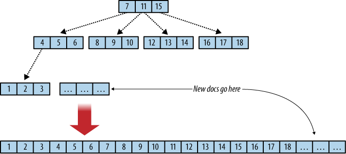

Building resilient infrastructure with CouchDB
Tim Perry
Tech Lead & Open-Source Champion at Softwire
Tim Perry
Talk about CouchDb
Who am I: I work for Softwire, London.
Bespoke dev on a huge variety of projects
One of which I want to talk about today
Softwire are hiring!
If you want to do things like this, apply, or talk to me afterwards
Not affiliated with CouchDB at all
Back to CouchDB though
Who's heard of CouchDB? Used? In Production?
Apache project
Core concept is 'relax'
Schema-free, simple to use, hard to break
Lightweight processes, will runnable on mobile, or in a browser
Not focusing on CouchDB generally, but some of the basics:
Document Store
{
"_id": "my-document-example",
"_rev": "21-qwe123asd",
"some-content": {
"a": 1,
"b": 2
},
"a list!": [3, 4, 5]
}
Document store
No joins
JSON
id
revision numbers (for concurrency, later)
HTTP API
$ curl -X GET http://couchdb:5984/my-db/a-doc-id
{"_id": "a-doc-id"
"_rev": "4-9812eojawd"
"data": [1, 2, 3]}
Typical RESTful API
Stored in DBs
Access by DB + doc name
_id is name
HTTP API
$ curl -X PUT http://couchdb:5984/my-db/another-id \
-H 'Content-Type: application/json' \
-d '{ "other data": 4 }'
{"ok":true,
"id":"another-id",
"rev":"1-2902191555"}
Can insert with specific ids, or without
Revision number is automatic
Increments on change
Psuedorandom hash
PUT to created specific docs and do updates
POST to created docs with random ids
Replication
# Pull from B > A
$ curl -X POST http://couchdb-A:5984/_replicator \
-H 'Content-Type: application/json' \
-d '{ "source": "http://couchdb-B:5984/demo-db",
"target": "demo-db",
"continuous": true }'
# Pull from A -> B
$ curl -X POST http://couchdb-B:5984/_replicator \
-H 'Content-Type: application/json' \
-d '{ "source": "http://couchdb-A:5984/demo-db",
"target": "demo-db",
"continuous": true }'
That's the basics out the way
The critical feature is trivial replication
We'll look at this in more detail later
Unidirection database synchronization
Push or pull, pull preferred, for reasons we'll get to later
Continuous
Incremental
Managed with documents
Updated with replication process metadata + state
Deleted or changed to manipulate process itself
Indexed Views
Incremental Map/Reduce
ACID (locally)
Erlang-based
Web UI
Show Functions
Filters
Validation
Irrelevant
But CouchDB is quite cool
Resilient Infrastructure
What I really want to talk about
Fine as a document store
Shines when providing resilient infrastructure though
= reliable workable data storage through *anything*
Total network failure
clusters of rarely-connected machines
Intermittent power
Not relevant everywhere, but sometimes amazing
Lets take a look at what this can do
Let's break everything!
while true
do
curl -X POST 'http://couchdb-A:5984/demo-db' \
-H "content-type: application/json" \
-d '{ "created_at": "'"`date`"'" }' \
--max-time 0.1
curl -X POST 'http://couchdb-B:5984/demo-db' \
-H "content-type: application/json" \
-d '{ "created_at": "'"`date`"'" }' \
--max-time 0.1
donewhile true
do
vagrant halt couchdb-a --force
sleep 30
vagrant up couchdb-a --no-provision
sleep 30
vagrant halt couchdb-b --force
sleep 30
vagrant up couchdb-b --no-provision
sleep 30
done
(Some console logging omitted)
2 CouchDB VMs (A & B)
Replicating together
Left: write new docs as fast as possible
Vagrant
Right: kill server, just yank the power out
Servers that are in active use, with power outages every 2 minutes
Pathological case
Show CouchDBs
Start writing
Show CouchDBs
Start killing
Show CouchDBs
Is this useful?
Hopefully not
If your situation is this bad, you're in real trouble, and should probably be at work fixing it
But many organisations and environments do have real troubles
Or need to be able to handle potential trouble
Large systems have to deal with external dependencies, unpredictability, critical SLAs
Cloud computing, more widely-distributed systems increase unreliability
Mobile devices and networks are unreliable
3rd world is unreliable
My hotel wifi next door is extremely unreliable
Uptime is *important*, to everybody
We need to work with this (Netflix has a chaos monkey for example)
Real World Example
(Anonymized)
B2B SaaS product, with strict SLAs
Millions of paying daily users
3,000 servers across 25 datacentres
50,000 requests per second, average
Highly latency sensitive
Every request needs the (readonly) user session
Unfortunately anonymized, but it's a real project from last year
Large structure of Java-based services
Read availability is their highest priority
Write availability a close second
Bonus Challenges
Struggling network infrastructure
Frequent loss of connection to datacentres
Occasional power outages in datacentres
Users can and do roam, worldwide
Server failover is always to a different datacentre
Data centres have hub & spoke connectivity only (through London)
Previous Solution
Hold all user sessions in memory on every server
Announce new sessions to every server with a central message queue
Canonical store kept in a single RDBMS (for server initialisation)
Real World Problems
Memory usage doesn't scale
Network and server failures are big problems
Message queue failures are catastrophic problems
So ailing infrastructure, high availability requirements: we needed a datastore that'd solve that
CouchDB Solution
Small LRU cache in every server
CouchDB in every datacentre
CouchDB in the central datacentre
Hub & spoke replication
Servers query local CouchDB by default, or fall back to central CouchDB
Real World Improvements
No single point of failure
Scales horizontally easily
Major memory savings
Some Challenges
Ops ramp-up
Support service setup
Disk usage
Hoodie
Web framework
Developer preview!
But lots of interesting features
Hoodie
Backend dev is almost by definition, far from user value
Focus on building features
Offline first like mobile first
Mobile first: assume minimal devices, scale up
Assume minimal connectivity, scale up to network features
Works by default
Offline first means performance feels great
Downtime has minimal impact
Scales with the number of clients
Lets take a very quick look
Hoodie
Save data
$('.addTask .submit').click(function () {
var desc = $('.addTask .desc').val();
hoodie.store.add('task', { desc: desc });
});
Task list
Add item on submit
store.add with item type, and the item
Persisted to local storage
Hoodie
Handle new data
hoodie.store.on('add:task', function (task) {
$('.taskList').append('<li>'+task.desc+'</li>');
});
Can subscribe to item additions
Here we add item to the list in the UI
Will be run if we add items, or if they come from elsewhere
Hoodie
Log in users
$('.login').click(function () {
var username = $(".username").val();
var password = $(".password").val();
hoodie.account.signIn(username, password)
.done(loginSuccessful);
});
You need long term persistence, and for that you need some sort of users
Provides user auth mechanisms, with a very simple API
All data is then stored for this user, and loaded again when they login later
But that needs a backend right?
Hoodie
Architecture
(From the Hoodie team at
http://hood.ie/intro#magic ,
CC-BY-SA-NC )
Changes are local, synced with CouchDB in the background
Each user gets a database, only that is replicated
Operations are documents
CouchDB, with node for extra functionality if required
Core stuff is all in by default
Operations updated server side when they complete
Built their own syncing replication client
Don't build your own sync! It's hard
Our project example was essentially home-made sync
Hoodie
Future Architecture (Probably)
(Modified, from the Hoodie team's diagram at
http://hood.ie/intro#magic ,
CC-BY-SA-NC )
Hoodie are actually looking to move to PouchDB currently
Essentially CouchDB entirely in the browser, and fully compatible
All together, gives you web applications that don't need servers
Hold all their own data client-side
Persist asynchronously
Don't depend on server being present
Why does any of this work?
What's going on under the hood to give us eventual consistency here
Despite network errors or sudden server deaths
Reliable Replication
Asynchronous
Handles network failures with retries
1/4 of a second, exponential backoff, until 5 minutes max
Pull preferred, as it can run immediately on restart
New nodes need data locally more than they need to provide data
Multiversion
Concurrency
Control
(or MVCC)
Before we can look at this in too much detail, we need to understand couchdb revisions
Walk through normal create update cycle with revisions
Gives ACID locally
Distributed, so concurrent changes
Handled by versioning all changes
We'll look at sync in a sec
Optimistic -> no locking!
Remote conflicts pick arbitrary deterministic revision
Differs from Riak
Reliable Replication
The Changes Feed
$ curl -X GET http://couchdb:5984/my-db/_changes?since=1
{ "results": [
{"seq":2,"id":"my-doc","changes":[{"rev":"1-128qw99"}]},
{"seq":3,"id":"my-doc","changes":[{"rev":"2-98s9123"}]},
], last_seq: 3}
DB actually keeps a overall sequence number
Incremented for every change
This means we can query for changes since a certain point
This feed just gives us revisions, by default
Powerful feature in itself
Also supports long polling to wait for changes, continuous streaming feed
Reliable Replication
Replication Process
Track the source's sequence number in a local-only metadata document in the target DB, unique to this replication, set to 0 initially
Read the changes from the source, since the sequence id stored in the local document in the target
Read any missing document revisions from the source DB
Write these updates to the target DB
Update the sequence number tracked in the target
Go to 2
(Paraphrased from
http://replication.io )
Can use this feed to incrementally work out what changes we need
Essentially pull the required changes to get to the current sequence number
Update our current sequence number only once all complete
If it fails before hand, we will've still pulled in some of the revisions
Which is why this 3rd step exists: can resume at any point
Sequence numbers just let us do that with more efficiency
Note that this is potentially going to be separate from the local DBs own sequence number
Append-Only B+ Trees
The second impressive trick
CouchDB avoids data corruption, whatever you do
Does this by never updating on-disk, only extending
Same sort of technical benefits as immutability generally
Append-Only B+ Trees 
(From 'CouchDB: The Definitive Guide ', CC-BY)
This isn't a great time for a detailed primer on B+ Trees
Look sort of like this, very shallow, wide nodes
Pointers between nodes makes it easy to place them carefully to support this
Higher up nodes do occasionally need updating, but we just create a new one
Old one left in place on disk
After each flush to disk, a footer is added saying which root is correct
Any prefix of a CouchDB database is a valid smaller database
Just go back to the previous footer, guaranteed to be complete
Footers have checksums for corruption
Actually write two footers, for thorough error correction
Did we break everything?
while true
do
curl -X POST 'http://couchdb-A:5984/demo-db' \
-H "content-type: application/json" \
-d '{ "created_at": "'"`date`"'" }' \
--max-time 0.1
curl -X POST 'http://couchdb-B:5984/demo-db' \
-H "content-type: application/json" \
-d '{ "created_at": "'"`date`"'" }' \
--max-time 0.1
donewhile true
do
vagrant halt couchdb-a --force
sleep 30
vagrant up couchdb-a --no-provision
sleep 30
vagrant halt couchdb-b --force
sleep 30
vagrant up couchdb-b --no-provision
sleep 30
done
(Some console logging omitted)
Stop the writer
Stop the server killer
Bring servers up
Show numbers are now back in sync
CouchDB is not perfect
One or two last points
Critical: you might not want this
Like all NoSQL DBs, it fulfills a niche
Don't assume just because it's NoSQL it's focused on performance
No functionality you might well expect
Arbitrary queries
Sharding
Joins, obviously
Not many tools around for monitoring etc
But 'always available' is a great superpower
NoSQL really isn't all about big data, it's about better data
Extra features, that enable and simplify powerful products
By moving away from traditional mindset
CouchDB is quite different
Unique phoenix from ashes of traditional SQL
Simplicity makes it easy to build monitoring etc on top
Makes testing and management simple and trivially automatable
Reliability means you can build cool things on the worst of foundations
Any questions?
Tim Perry
Tech Lead & Open-Source Champion at Softwire